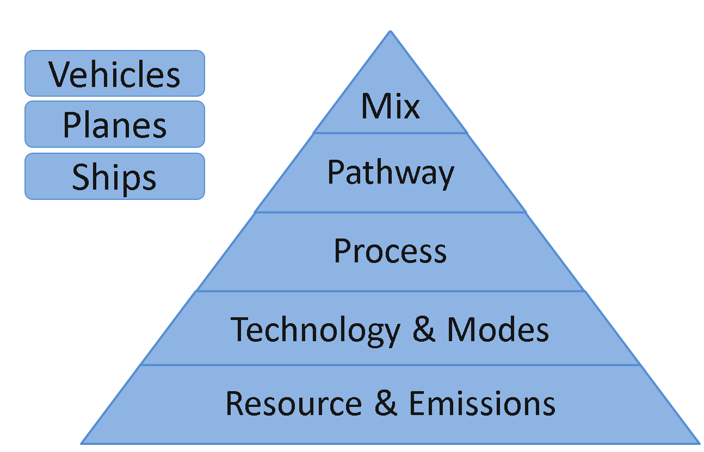

Data EditorsThe data editors are essential to modify the content of the database and add new instances of entities that the database does not already contain. For example, the user can add a new pathway or edit an existing resource. The GREET model is built around essential entities that are Resources, Emissions, Technologies, Processes, Pathways and Mixes: these constitute the Well to Product (or well to pump) part of the calculations. Then other entities such as Vehicles, Planes, and Ships are modelled to re-use the upstream results from the model. 
Building blocks of the GREET model
ResourcesWe assume resources to be elements used in flows between processes and pathways. They can be energy types (electricity), natural resources (crude oil), products (ethanol) or chemicals (fertilizers). There is basically no limit to how many or what resources can be, but we assume that each of the resource can be quantified into one of the following dimensions:
We also create resources for "Electricity", "Solar Energy", and "Hydro Energy", whatever we need to "track" as a flow in the model is created as a resource. Resources have physical properties that are important as they allow us to make automatic conversions between mass, volume, energy, and market value. Without these properties it is still possible to build pathways, but entering the data becomes less flexible. Note: Resources are also used for the outputs of processes and pathways, thus we do not make a technical distinction between "products" and "resources". However we do track which resources are "Primary Resources", they are the ones we extract from our environment and we want to keep track of. For example Crude Oil and Iron Ore are considered Natural Resources. EmissionsEmissions are gases or other types of pollutants that can be released in nature as a results of the production of some product. Emissions are most of the time emitted because of combustion technologies, but non combustion emissions can also be defined in the processes.Emissions have physical properties that are important for emission calculations:
Emissions are frequently used in technologies expressed in mass per amount of energy combusted TechnologiesTechnologies can be seen as a matrix of emission factors organized per emission and per year. We have probably as many emission factors defined every 5 years as we have technologies defined for a default year (year 0 is considered default when no time series data is available)Technologies must define a resource combusted (or used as an input) and emission factors relatively to that resource. For example the emission factors for a natural gas boiler are going to be different than the emissions factors for a residual oil boiler. Most of the time though, we leave the SOx and CO2 emission factors to be balanced automatically by the software using the carbon and sulfur ratio of the emission, as well as the carbon and sulfur ratio of the resource combusted and other emission factors already defined by the user. Technologies are used whenever a resource is combusted: typically in the inputs of a stationary process, but also in the transportation modes such as the engine of a train or ocean tanker. A important feature to know is that Technologies are able to know the ratio of biogenic carbon in the burned resource by analyzing the upstream linked to the production of that resource. For example Ethanol production is largely based on biofuels, therefore the biongenic carbon content of the Ethanol produced in the US contains almost 100% of biogenic carbon (a little less if we blend it with a denaturant such as gasoline). If emission factors are defined for a technology using Ethanol (for example combusting ethanol in an internal combustion engine) the CO2 emitted in the atmosphere will be a negative value due to it's biogenic nature. ProcessesA process define a system boundary where flows of resources are coming in, and flows of products and emissions are coming out. Overall in GREET we set the system boundaries at a pretty high level. Plants usually define our system boundaries, and for these, we account all the resources they use, and all the products and emissions they release. Some more detailed level is achievable as well, for example steel production is detailed by sub-process within the steel mill (Sinter, furnace, rolling, casting, extrusion...). The processes in GREET are defined by:
PathwayPathways are a structure that we use to account for a series of processes that are used to produce one or more final product from one or more feedstock. For example Ethanol can be produced from different types of Sorghum, thus in GREET, a pathway Ethanol from Sorghum allows the user to see the chain of processes and events in the manufacturing of Ethanol from these types of feedstock. The general structure behind a pathway is an oriented graph that can be cyclic. Thus complex pathways can be used to represent sub-processes within a large and complex manufacturing process. For example one could imagine a pathway used to represent a refinery. This pathway would include multiple processes such as Distillation, Hydrocracking, Alkylation, Polymerization... and multiple outputs such as Gasoline, Solvants, Jet Fuel, Residual Oil.... Pathways can also be reused as a feedstock in other pathways. For example "Corn Production" is a pathway that is reused as a feed into "Ethanol Production from Corn". This capability allows the user to gain a lot of time reusing existing entities. In order to do that, simply drag and drop a pathway in the pathway editor instead of dragging a process. The only difference is that a pathway will have no inputs represented visually, only outputs of a pathways can be linked to other items, such as processes inputs. MixIn many cases, such as ethanol production, electricity production or others, there are different ways of producing a very similar product. In this case, multiple pathways may exists such as "Electricity from Natural Gas", "Electricity from Nuclear Plant",... We can then decide to create regional mixes for electricity production: In the US we distinguish twelve main regions, for each region electricity is produced using different shares for each of the technologies. Mix were designed to perform a weighted average of multiple pathways, however mixes can also be reused into other mixes. Basically there is not difference between weight averaging the upstream results associated with a mix to weight averaging the results associated with a pathway. As pathways are able to chain processes, and use other pathways as feedstock, mixes can also be used as a feedstock in a pathway, and then, linked to the input of a process. This allows for example to use "Distributed Electricity Produced in U.S." into other pathways that may need this product. The difference between using a mix or a pathway as a feedstock for another pathway is that mixes have only a single output. Finally mixes can be used to create blends: If two resources are marked as "Compatible" they can be blended together in a mix. However we try to discourage this practice and perform the blends into a stationary process instead. VehiclesVehicles are used in the model to calculate the WTW (well to wheels) analysis. They are using the upstream calculated in the WTP (well to pump or well to product) as fuels and considering the eneergy efficency of the vehicle and it's emissions, we then aggregate all the results into a single WTW analysis. The vehicles are defined by:
The results can then be observed in the WTW tab of the software where all vehicles are categorized by fuel used. |